ag2 <<
Previous Next >> ag5
ag4
2a-pj1ag4組員:41023125、41023128
pj1ag4倉儲:https://github.com/mdecd2023/2a-pj1ag4
pj1ag4網頁:https://mdecd2023.github.io/2a-pj1ag4
2a-pj1ag4 分組報告pdf
歷程
3/24 完成將bubbleRob 雙輪車調整成手動模式
利用awsd鍵進行移動

觸發特定條件使bubbleRob 雙輪車回到原位
3/25 完成足球製作以及觸發條件設定製作
使球觸碰到球門的感測器後重製球場
紀錄初始位置
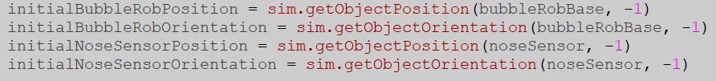
重製位置
 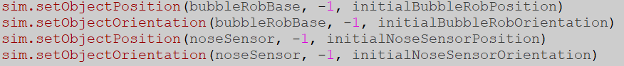
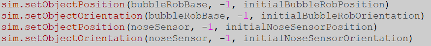
3/26 增加放開鍵盤會停止、倒數計時、記分板
增加放開鍵盤一段時間後會將速度設為0直到按下鍵盤
 增加倒數計時與分數的面板
增加倒數計時與分數的面板
開始後開始倒數計時
時間到則結束
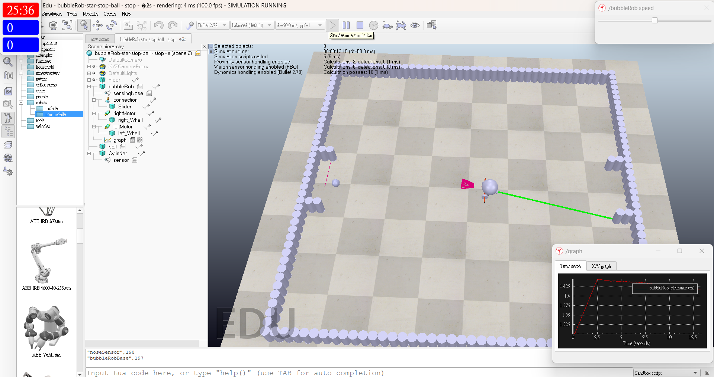
兩邊感測與計算皆完成
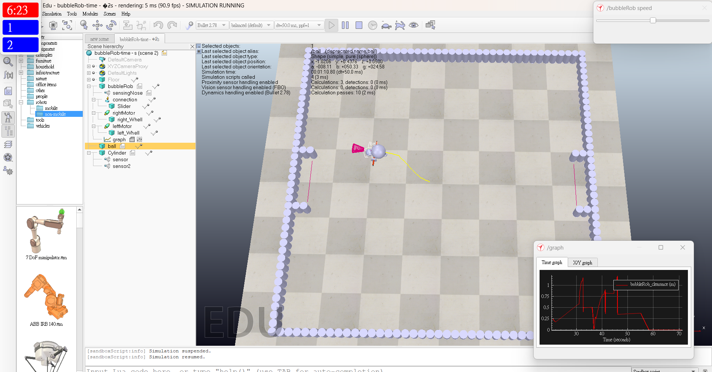
記分板與計時程式
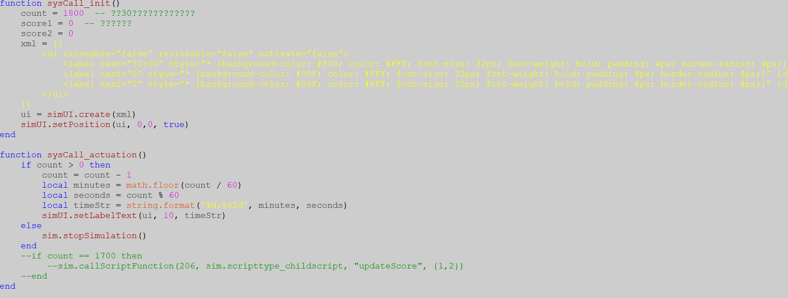
3/29 連線問題解決
將操作的程式轉成python
4/12 確認連機遊玩可執行
加入歡迎跟恭喜
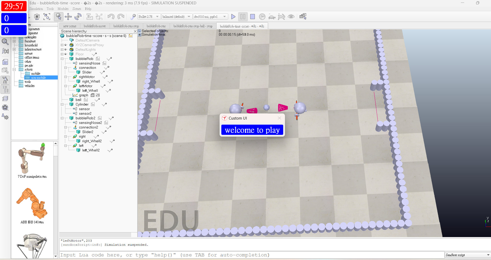
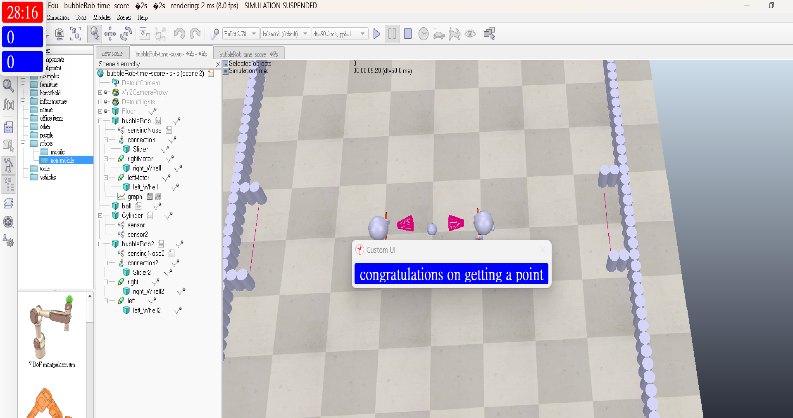
共經歷了八個版本改版
前七個版本:bubbleRob紀錄.7z
最終版:bubbleRob.7z
裡面包含了my_ip.txt ip.bat ip.py bubbleRob2.py bubbleRob.py bubbleRob_scenes.ttt等
點擊ip.bat就能直接獲取到目前電腦的ipv4位置
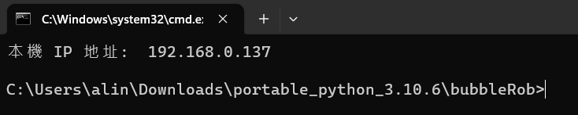
加入遊戲所在電腦ip 只需輸入ip (遊戲所在電腦ip)
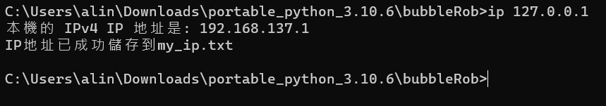
程式
場景部分將程式將拆成了許多部分
用以方便維修
function sysCall_init()
-- 場景模擬開始時開啟19998與23020埠號
simRemoteApi.start(19998)
simRemoteApi.start(23020)
end
function sysCall_init()
--紀錄初始位置並在得分時重置位置
--倒數計時與計算分數並顯示等
sensor = sim.getObject('./sensor')
sensor2 = sim.getObject('./sensor2')
bubbleRobBase = 197
bubbleRobBase2 = 210
ball = 206
initialBubbleRobPosition = sim.getObjectPosition(bubbleRobBase, -1)
initialBubbleRobOrientation = sim.getObjectOrientation(bubbleRobBase, -1)
initialballPosition = sim.getObjectPosition(ball, -1)
initialballOrientation = sim.getObjectOrientation(ball, -1)
initial2Position = sim.getObjectPosition(bubbleRobBase2, -1)
initial2Orientation = sim.getObjectOrientation(bubbleRobBase2, -1)
-- do some initialization here
count = 1800 -- ??30????????????
score1 = 0 -- ??????
score2 = 0
xml = [[
<ui closeable="false" resizeable="false" activate="false">
<label text="30:00" style="* {background-color: #F00; color: #FFF; font-size: 32px; font-weight: bold; padding: 4px; border-radius: 4px;}" id="10"/>
<label text="0" style="* {background-color: #00F; color: #FFF; font-size: 32px; font-weight: bold; padding: 4px; border-radius: 4px;}" id="20"/>
<label text="0" style="* {background-color: #00F; color: #FFF; font-size: 32px; font-weight: bold; padding: 4px; border-radius: 4px;}" id="30"/>
</ui>
]]
ui = simUI.create(xml)
simUI.setPosition(ui, 0,0, true)
end
function sysCall_actuation()
result=sim.readProximitySensor(sensor)
result2=sim.readProximitySensor(sensor2)
--if sim.getSimulationTime() == 0 then
--sim.pauseSimulation()
--end
-- 0 or 1
if(result>0)then
sim.pauseSimulation()
sim.setObjectPosition(bubbleRobBase, -1, initialBubbleRobPosition)
sim.setObjectOrientation(bubbleRobBase, -1, initialBubbleRobOrientation)
sim.setObjectPosition(ball, -1, initialballPosition)
sim.setObjectOrientation(ball, -1, initialballOrientation)
sim.setObjectPosition(bubbleRobBase2, -1, initial2Position)
sim.setObjectOrientation(bubbleRobBase2, -1, initial2Orientation)
score1 = score1 +1
end
if(result2>0)then
sim.pauseSimulation()
sim.setObjectPosition(bubbleRobBase, -1, initialBubbleRobPosition)
sim.setObjectOrientation(bubbleRobBase, -1, initialBubbleRobOrientation)
sim.setObjectPosition(ball, -1, initialballPosition)
sim.setObjectOrientation(ball, -1, initialballOrientation)
sim.setObjectPosition(bubbleRobBase2, -1, initial2Position)
sim.setObjectOrientation(bubbleRobBase2, -1, initial2Orientation)
score2 = score2 +1
end
if count > 0 then
count = count - 1
local minutes = math.floor(count / 60)
local seconds = count % 60
local timeStr = string.format("%d:%02d", minutes, seconds)
simUI.setLabelText(ui, 10, timeStr)
simUI.setLabelText(ui, 20, tostring(score1))
simUI.setLabelText(ui, 30, tostring(score2))
else
sim.stopSimulation()
end
end
function sysCall_init()
--開始時暫停模擬並顯示welcome to play
--之後顯示congratulations on getting a point
xml1 = [[
<ui closeable="false" resizeable="false" activate="false">
<label text="welcome to play" style="* {background-color: #00F; color: #FFF; font-size: 32px; font-weight: bold; padding: 4px; border-radius: 4px;}" id="1"/>
</ui>
]]
ui1 = simUI.create(xml1)
add = true
-- Pause simulation on the first run
sim.pauseSimulation(true)
end
function sysCall_actuation()
simUI.hide(ui1)
end
function sysCall_suspend()
simUI.show(ui1)
--simUI.setLabelText(ui1, 1, "good game")
if add == false then
simUI.setLabelText(ui1, 1, "congratulations on getting a point")
end
add = false
end
python操控部分
#bubbleRob.py
import sim
import sys, math
import keyboard
import time
with open('my_ip.txt', 'r') as f:
my_ip1 = f.readlines()
for line in my_ip1:
if 'game' in line: #game #myip #local
ip = line.split(':')[1].strip()
print(ip)
# 連接到 CoppeliaSim simulation
sim.simxFinish(-1)
clientID = sim.simxStart(ip, 19997, True, True, 5000, 5)
sim.simxStartSimulation(clientID, sim.simx_opmode_oneshot_wait)
if clientID != -1:
print("已連線到遠端 CoppeliaSim 伺服器")
else:
print('連線失敗')
sys.exit('無法連線到 CoppeliaSim 伺服器')
# 取得馬達與感測器的 handles
errorCode, leftMotor = sim.simxGetObjectHandle(clientID, 'leftMotor', sim.simx_opmode_oneshot_wait)
errorCode, rightMotor = sim.simxGetObjectHandle(clientID, 'rightMotor', sim.simx_opmode_oneshot_wait)
errorCode, sensingNose = sim.simxGetObjectHandle(clientID, 'sensingNose', sim.simx_opmode_oneshot_wait)
# 設定一些參數
deg = math.pi/180
paused = False
if errorCode == -1:
print('找不到左右馬達')
sys.exit()
def jointspeed(left,right):
errorCode4=sim.simxSetJointTargetVelocity(clientID,leftMotor,left, sim.simx_opmode_oneshot)
errorCode5=sim.simxSetJointTargetVelocity(clientID,rightMotor,right, sim.simx_opmode_oneshot_wait)
errorCode, number2 = sim.simxLoadModel(clientID, 'number2.ttm', 0, sim.simx_opmode_oneshot_wait)
while sim.simxGetConnectionId(clientID) != -1:
event = keyboard.read_event()
if event.event_type == 'down':
print('The "' + event.name + '" key was pressed.')
if event.name == 'a' :
jointspeed(-3,5)
elif event.name == 'w' :
jointspeed(5,5)
elif event.name == 's' :
jointspeed(-5,-5)
elif event.name == 'd' :
jointspeed(5,-3)
if event.name == 'p':
if not paused:
print('Paused')
sim.simxPauseSimulation(clientID, sim.simx_opmode_oneshot_wait)
paused = True
time.sleep(0.1)
else:
print('Resumed')
sim.simxStartSimulation(clientID, sim.simx_opmode_oneshot_wait)
paused = False
time.sleep(0.1)
#bubbleRob2.py
import sim
import sys, math
import keyboard
import time
with open('my_ip.txt', 'r') as f:
my_ip1 = f.readlines()
for line in my_ip1:
if 'game' in line: #game #myip #local
ip = line.split(':')[1].strip()
print(ip)
# 連接到 CoppeliaSim simulation
sim.simxFinish(-1)
clientID = sim.simxStart(ip, 19998, True, True, 5000, 5)
sim.simxStartSimulation(clientID, sim.simx_opmode_oneshot_wait)
if clientID != -1:
print("已連線到遠端 CoppeliaSim 伺服器")
else:
print('連線失敗')
sys.exit('無法連線到 CoppeliaSim 伺服器')
# 取得馬達與感測器的 handles
errorCode, sensingNose = sim.simxGetObjectHandle(clientID, 'sensingNose', sim.simx_opmode_oneshot_wait)
errorCode = 0
leftMotor = 216
rightMotor = 214
print(errorCode)
# 設定一些參數
deg = math.pi/180
paused = False
if errorCode == -1:
print('找不到左右馬達')
sys.exit()
def jointspeed(left,right):
errorCode4=sim.simxSetJointTargetVelocity(clientID,leftMotor,left, sim.simx_opmode_oneshot)
errorCode5=sim.simxSetJointTargetVelocity(clientID,rightMotor,right, sim.simx_opmode_oneshot_wait)
errorCode, number2 = sim.simxLoadModel(clientID, 'number2.ttm', 0, sim.simx_opmode_oneshot_wait)
while sim.simxGetConnectionId(clientID) != -1:
event = keyboard.read_event()
if event.event_type == 'down':
print('The "' + event.name + '" key was pressed.')
if event.name == 'a' :
jointspeed(-3,5)
elif event.name == 'w' :
jointspeed(5,5)
elif event.name == 's' :
jointspeed(-5,-5)
elif event.name == 'd' :
jointspeed(5,-3)
if event.name == 'p':
if not paused:
print('Paused')
sim.simxPauseSimulation(clientID, sim.simx_opmode_oneshot_wait)
paused = True
time.sleep(0.1)
else:
print('Resumed')
sim.simxStartSimulation(clientID, sim.simx_opmode_oneshot_wait)
paused = False
time.sleep(0.1)
遊戲說明
開啟場景後便可以使用19997進行連線
如果成功連線便會顯示
這時23020與19998埠號便會開啟
第二位玩家便可利用19998加入遊戲
加入成功便會立即開始
玩家可利用wasd進行操控
觀戰者可以利用23020埠號進行觀戰
一方得分後便會暫停遊戲並還原場地
按下p則繼續遊戲
時間到便會結束遊戲
歡迎與恭喜lua程式
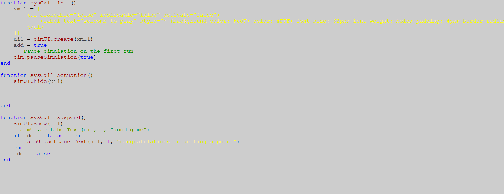
缺陷
1.在23020埠號的觀戰者無法查看到分數與時間,只能顯示在場景的主畫面上
2.機器人的機體不適合推球
3.遊戲結束後可以加入哪方勝利字樣
4.計分可以拆分成兩方並標示(藍方紅方等)以便了解比分情況
5.翻車時目前沒有自救空間
可以增加按鍵來達成加機器擺正
6.按鍵指令只能觸發一個
造成動作不夠連貫
希望能做到同時按兩個鍵
將會有更高的操作性
補充
sensingNose其實沒有實際用處
不拔除主要原因是可以用來凸顯bubbleRob的移動方向
心得
這次的專案從中學習到了CoppeliaSim的remoteApi實際運作方式
也對CoppeliaSim的lua與python的寫法有更深得了解
對於CoppeliaSim的句柄用法了解透徹能夠靈活運用
不過對於sim.py函式庫的使用依舊有加強空間
許多函式不熟悉只能使用替代方案執行
編寫程式時可以多利用print
不管是除錯或者理解暫存的內容都好用
lua的寫法與習慣的pyhton略有不同
例如
--lua註解
#python註解
lua程式後面需要加上end表示結束
但不需要像python重視縮排
-- lua 的if
if *條件* then *輸出* elseif *條件2* then *輸出2* else *輸出3* end
python不需要then 且elif跟lua的elseif寫法不同需要注意
-- lua 的whilefunction sysCall_actuation()
*程式*
end
跟python的while True:類似無限循環執行到結束
ag2 <<
Previous Next >> ag5